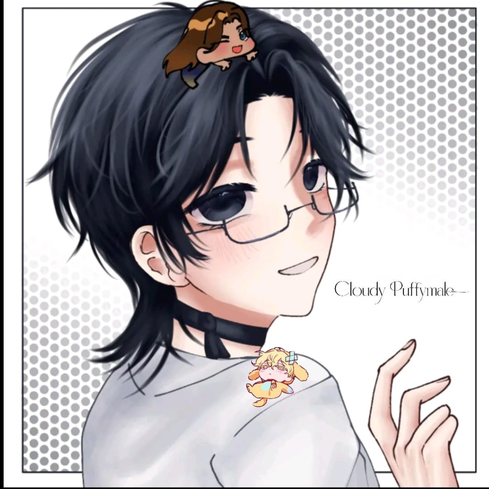
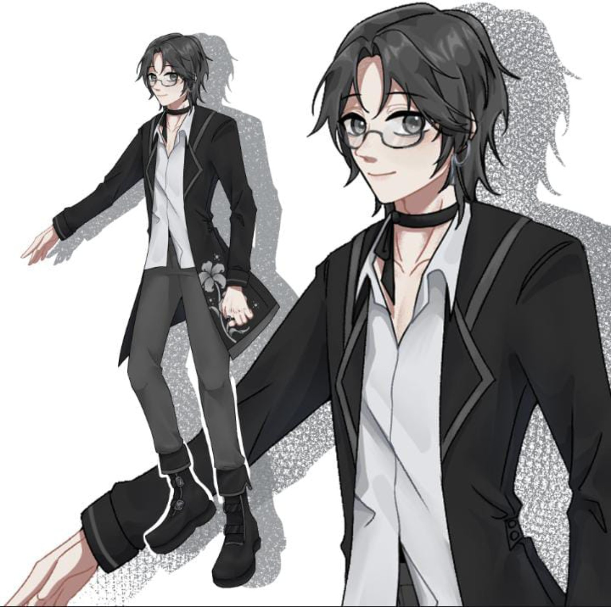

🎮 My Fandoms

👽 Alien Stage

💙 Project Sekai

🐰 Chiikawa

🖤 BABYMONSTER

💗 Hearts2Hearts

Welcome to my little corner of the internet ✨
Get to Know Me
Aku suka editing, gaming, musik, dan berbagai hal kreatif.
I'm an INFP and a proud multifandom! ✨
All Alien Stage songs, all BABYMONSTER songs, K-pop, and some Indonesian songs like "1000x" by Ghea and "Dunia yang Nanti" by Raim Laode.
MLBB, Roblox, Friday Night Funkin', Project Sekai, Sonolus, Cookie Run: Kingdom, HOK, and many more!
Vocaloids from Project Sekai, Kasane Teto, Akita Neru, all Project Sekai characters, and basically all anime characters!
Singing, cooking, and editing videos using Alight Motion.
Sky blue! ☁️
Cloudy Puffymale is my original character, created entirely from my own imagination. He is a character I created because I wanted to have someone that was truly my own. His design, personality, and identity all come from my own creative ideas. ☁️
☁️ Name: Cloudy Puffymale
🎂 Age: 19
📏 Height: 178 cm
🧠 MBTI: INFP-T
🌙 Enneagram: 9w1
🎤 Position: Lead Vocalist • Visual
Theme Colors: Grey, Black, Silver & White


Want to say hi or know more about me?
Feel free to find me here! ✨